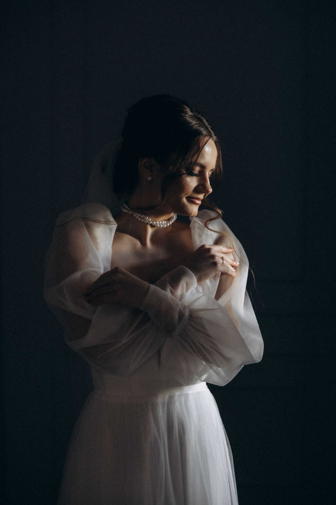
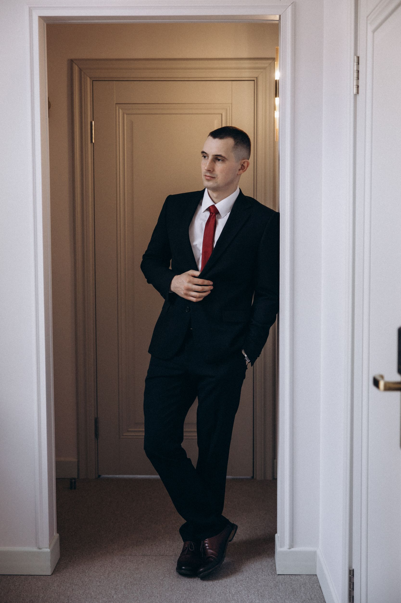

Редакционная стилизация и композиция, вдохновлённая fashion-съёмками.


Fashion photographer / cinematic portrait stories
Pasha Sokol
Редакционные съёмки, портреты и визуальные истории с мягкой драматургией, тактильным светом и спокойной luxury-эстетикой.
About the vision
AUTHENTIC
В основе каждого кадра лежит не поза ради позы, а настроение. Я собираю съёмку как небольшую историю: от фактуры ткани и ритма света до тишины между движениями.
Аккуратная работа с цветом: молочные, графитовые и тёплые карамельные тона.
Кадры для личного архива, брендов, лукбуков и intimate portrait stories.
Signature approach
Эстетика, в которой есть воздух
Visual direction
Съёмка начинается с мудборда и заканчивается готовой драматургией кадра.
Quiet luxury mood
Мягкие тени, благородные оттенки и верстка, которая ощущается как печатная editorial-полоса.
Human detail
Я оставляю в кадре дыхание, жесты и естественные паузы, а не только идеальную геометрию.
Selected work
Портфолио
Микс крупных editorial-кадров и плотной галереи, собранной как лента визуальных заметок из одной съёмочной истории.
Главный кадр задаёт настроение всей серии: тишина, архитектура пространства и очень точный свет.
What I offer
Форматы работы
Подход из fashion-портфолио я переношу в реальные съёмки: от персональных портретов до визуалов для бренда, lookbook и кампаний.
Editorial portrait
Персональная история с художественным светом, собранной стилизацией и кадрами, которые ощущаются как авторская серия.
Brand campaign
Съёмка для продукта, капсулы или lookbook: точная сетка кадров, единое настроение и фокус на визуальной идентичности.
Story session
Неспешный формат для пар, артистов и личных проектов, где главная роль у атмосферы, деталей и естественной пластики.
Let's create
Съёмка начинается с простого разговора
Если вам близка эта эстетика, соберём проект под задачу: настроение, локацию, референсы, стилизацию и итоговый ритм серии.
01
Короткий бриф и обсуждение задачи.
02
Подбор визуального направления, локации и образов.
03
Съёмка и финальная подборка в единой editorial-манере.